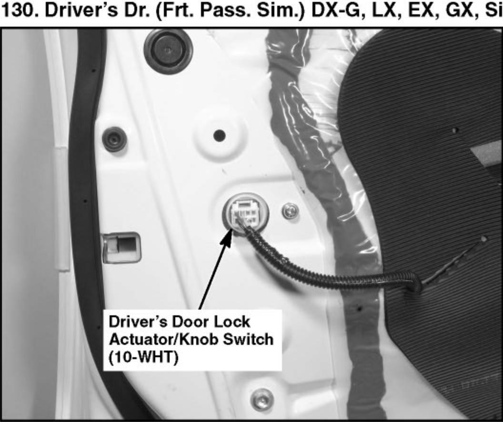

Operation CHARM
: Car repair manuals for everyone.
Home
>>
Honda
>>
2007
>>
Civic Si L4-2.0L
>>
Repair and Diagnosis
>>
Locations
>>
Component Locations
>>
Locations By Photo Number
>>
Location Photos 126-150
>>
130. Driver's Dr. (Frt. Pass. Sim.) DX-G, LX, EX, GX, Si
130. Driver's Dr. (Frt. Pass. Sim.) DX-G, LX, EX, GX, Si
130. Driver's Dr. (Frt. Pass. Sim) DX-G, LX, EX, GX, Si:

Keyless/Power Door Locks/Security System Component Location Index: